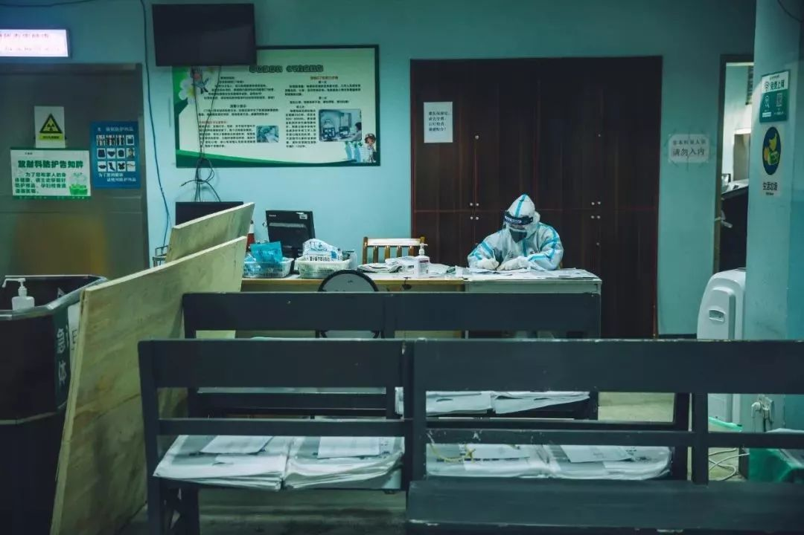
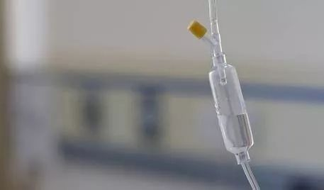

同志情侣在疫情一线|“生命所系，性命相托。我守百姓健康，你守一方平安”
原文链接 备份链接 “招呼好乐乐、可可。”登机后，晓阳立即给男友林峰发了微信，不放心他们一起养的两只宠物，其实是更不放心男友。 “你才要照顾好自己。” “要登机了吗？” “那俩小的你不用担心。” “一落地记得给我打个电话。” 男友光速回 …
14号，晓阳和林峰的情人节和宅在家里的情侣的节日一样平淡，甚至更没有节日气氛——两个人都在工作。
情人节早上，林峰对晓阳说“要去社区执勤了”，林峰他们要管理多个社区，让社区居民不要随便出门。还要去高速路口，检查过往车辆，测体温。北方现在仍然很冷，14号这天下过大雪，林峰还带着单帽子，口罩蒸腾出的哈气在帽檐上结了霜。林峰拍了张帽子的照片给晓阳，然后问晓阳的却是，“降温了，你那衣服够不够？”

林峰执勤时的警帽
14号武汉下了雨，15号下了雪，医院给晓阳发衣服了，冲锋衣和羽绒衣，都可以御寒。“我们这里，生活物质很到位，防护物资还是紧缺的，比如还缺面屏，防护装备都要省着用。”
情人节当天，晓阳上的是1点到5点的班。临进病区，晓阳还和林峰视频了，看到林峰口罩没戴好，晓阳说了林峰半天。
下午3点，晓阳所在的重症病区，来了一位危重病人，情况很不好。病人70多岁，“危重病人都是年龄大的，年轻的特别少，”晓阳说。重症病区50张床，都没有闲着的，“40位病重10来位病危，已经去世了一位。但有些病情有好转了。”

因为防护服不透水，像是塑料布，穿久了，防护服就容易胀气，晓阳在给病人做气管插管时，病人的分泌物喷了出来，喷在了面屏上，让林峰很紧张。随后在做心肺复苏时，防护服一下子爆了。因为情况紧急当时就用胶布贴了一下，然后才离开。“这算是职业暴露。”非常危险，晓阳一下子很害怕。
下班后，晓阳仔细地消毒、洗澡，悬着的心才稍微放下一点。晓阳很担心被传染，昨天组里有一个人发热了，因为没有那么多试剂盒，所以要先观察，让同事非常焦虑。晓阳坦承：“我们工作时间不长，但很累，心累。”晓阳也开始焦虑起来。跟林峰说了后，林峰很担心，气得骂晓阳“你傻啊，啥也往前冲！”

晓阳下班后脱下防护服的手臂，四肢都有勒痕
下班后，晓阳和回到家的林峰视频了，嘱咐林峰出去时多穿一点，视频时通过林峰的镜头晓阳看了看家里的猫，大的那只在墙角卧着，一动不动。“我朋友以前打过人家，所以它很怕他，不是很愿意和他亲近。”
情人节的时候，林峰会给晓阳送花，但从来不送红玫瑰，而是白玫瑰和蓝玫瑰。“因为情人节都要上班，所以只能送到办公室，在办公室里，别人不知道我的情况，我也没有女朋友，送红玫瑰别人会问来问去。”视频时，林峰自责地对晓阳说：“今年没有玫瑰花了，现在外卖都不派送了。”
每到情人节，情侣们会约会，或者是想着法子浪漫，但晓阳和林峰反倒要忙工作，情人节很多情侣出来吃饭、约会，造成很多地方人流密集，身为警察的林峰需要更多地执勤。情人节晓阳也是更忙碌的，他说：“情人节时，急诊肯定要比平时更忙，打架受伤的、喝酒喝多的、自杀的比例比平时高，我们自然要更忙。”
因为林峰管辖的区域和晓阳的医院在同一个区，2018年他们曾“幸运地”因为工作，一起过了一个情人节。当时林峰正在当班，一个女人在公园里喝药自杀，林峰和同事把女子送到晓阳的急诊科抢救。那天晓阳上的是二线班（一线班7小时下班，二线班24小时下班）。晓阳看到女子时是下午五点多，女子已经陷入深度昏迷，抢救的医生无法知道女子吞服的是什么药物，只能通过洗胃等基本方式来救治，但无法应用抗结剂，见效会慢一些。
因为家属没来，林峰一直在病房外值班陪护。晓阳担心病人不能好转，和林峰商量去公园现场看看，也许能找到服毒的线索。林峰发现病人的现场是在一个街心小公园，已经快12点，公园大门早就锁了，他们找到看门人开锁，在假山周围用手机的手电筒找来找去。
最后在凉亭里发现一个塑料袋，里面有五个盛放治疗癫痫病药物的药瓶，这种药大量服用就会致死，毒药找到了，解药也好办了。

回到医院，晓阳把药瓶和药名都告诉了医生，医生找到了对应的抗结剂。凌晨三点多，家属终于来了。简单问询后得知，这个姑娘30多了，未婚，因为感情问题，在情人节这天选择了自杀。
虽然都在工作，但两个人可以在一起说话，一起救助病人，一起去公园找服毒线索，一路上晓阳披着林峰的大衣，这些都让晓阳觉得很甜蜜很难忘。一直到第二天晚上，陪护了二十几个小时的林峰才和下了班的晓阳一起回了家。
“我们从来没有像别人那样的甜蜜情人节，”晓阳说。从2014年6月两个人开始在一起，情人节就总是聚少离多。第一个情人节林峰在外学习，两人没见着，林峰异地下单，为晓阳买了别致的蓝玫瑰。 到了情人节，两个人常常一个上夜班，一个值班，别人还可以用“情人节要团聚”为理由要求下班，晓阳和林峰都是单位同事眼中的单身汉，所以经常在情人节代班。
而且两个人也不愿出门，有一年的情人节两个人都没工作，就相约一起吃饭，情人节这一天的餐厅都是一男一女吃饭，“我们两个男的坐一起，别人就老用奇怪的眼神看我们俩。”晓阳说：“我们这种三线城市和北上广还是不一样的，我比较羞涩，之后就不爱出门吃饭了。”晓阳说自己的工作还无所谓，“林峰的工作，要是单位知道了不得了。”公安系统崇尚“钢铁直男”，而且在林峰单位，像林峰这种本科毕业的也并不很多，挺多是中专大专甚至更低学历的，“学历低的，而且素质不怎么好的，会排斥同志。”晓阳说。
林峰的情人节礼物也很“直男”，每次都是送花。收到玫瑰花后，晓阳也会被同事问是谁送来的啊，晓阳呵呵一笑，并不回答。“我们单位有个别人知道，我们单位无所谓了。呵呵。”

16日，北方和武汉雪后都放了晴，天空都湛蓝透亮，让人心情稍微舒展。职业暴露后两天，晓阳继续上班，暂时没有出现什么症状，心情也稍微“放晴”。
晓阳还不知道疫情什么时候结束，不知道自己什么时候回家，但他知道又过了两天，离回家的日子更近了。

（本文根据晓阳口述整理）

路LRH
谢谢观赏
长按二维码向我转账
谢谢观赏
受苹果公司新规定影响，微信 iOS 版的赞赏功能被关闭，可通过二维码转账支持公众号。
原文链接 备份链接 “招呼好乐乐、可可。”登机后，晓阳立即给男友林峰发了微信，不放心他们一起养的两只宠物，其实是更不放心男友。 “你才要照顾好自己。” “要登机了吗？” “那俩小的你不用担心。” “一落地记得给我打个电话。” 男友光速回 …
原文链接 备份链接 摘要：这是几对医护夫妻的故事。他们有的结婚超过十年，有的还没来得及举办婚礼。他们在同一栋楼里工作，却很少见面，或者因为穿着防护服，差点没认出彼此。情人节这天，他准备了一盒费列罗巧克力，但为了避免传染的风险，隔着十米远放 …
原文链接 备份链接 连续工作了四天的晓阳，今天迎来了第一个休息日。昨晚和男友林峰视频后，他又抽空给林峰写了封信。经过晓阳授权，现转载如下： 峰哥吾爱： 见字如面！算着离别的日子，我总是在想你何时才能陪伴我左右。今天全副武装，一个班下来， …
原文链接 备份链接 **记者/佟晓宇 ** 编辑/石爱华 宋建华 刘畅穿上防护服，进入隔离室 离开一岁多的孩子，刘畅上了“前线”，给儿子自然离乳的计划，没办法实现了。 刘畅是一名耳鼻喉科的护士，她所在的医院是武汉市第一批收治新冠肺炎患者的 …
原文链接 备份链接 医学史 今天你的行医故事，就是明天的医学史 按 除夕夜，上海首批136名医务人员组成的医疗队紧急驰援武汉。本文作者，上海仁济医院呼吸科主治医师查琼芳从1月24日起就进驻金银潭医院重症病房工作。在完成高强度、忙碌而艰苦的 …